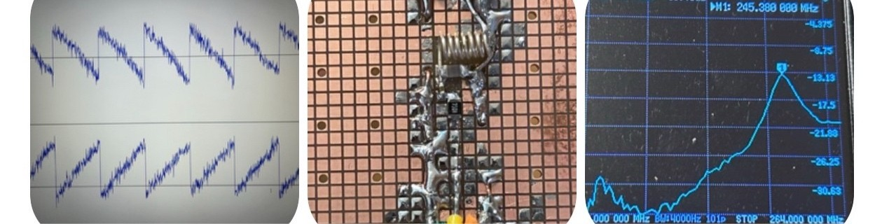

A 1-pin fully digital SDR receiver frontend and a 1-pin resonant-tank transmitter driven by a fully digital SDM Weaver modulator in Verilog, with crude PCB prototypes and FM receive videos.

Computational substrates, circuit fabrics, browser-native GPU experiments, magnetic devices, digital radio, and self-assembling hardware ideas by Brian Greenforest.
A 1-pin fully digital SDR receiver frontend and a 1-pin resonant-tank transmitter driven by a fully digital SDM Weaver modulator in Verilog, with crude PCB prototypes and FM receive videos.

A positive-number serial multiplier built in Logisim. After the pipeline fills, the next pair of bit-serial arguments can enter immediately after the previous pair, with output bits continuing on every clock.
An early public generative Transformer artifact: 4 layers, 16 attention heads, 128-dimensional embeddings, 128-token context, 361-token vocabulary, about 834k parameters, trained past 50,000 iterations until the tiny model produced strange but intelligible stories.
A browser/GPU demo of a tiled computational fabric where regions can instantiate and replace daughter regions through local reconfiguration ports and serial bitstreams.
A printable reference paper on a multiplexer-only Boolean model of universal computation built from wires, constants, 2:1 multiplexers, feedback, configuration registers, and unbounded tiling.
A step-by-step exploration of the beautiful world of computation, mathematics, physics, and engineering, with browser-native WebGL experiments and runnable code.
Executable WebGL automata exploring reversible routing, information-conservative dynamics, machine-like heat, and organic large-scale patterns.
Magnetic material properties, magnetic amplifier behavior, second-harmonic modulation, and diodeless circuit ideas collected while studying how to build useful circuits without semiconductor fabrication.
Online backpropagation engines wired from primitive operations: multiplication, addition, fan-out, and elementary functions carrying derivative feedback directly through the computation.
A smart-dust substrate proposal using ordinary-fab steps: through-wafer dicing into micrometer-scale chip modules, conformal SiO2 coating, and adjacent capacitive and inductively coupled links for actuation, power, clock, and data transfer.
{kind=link}
{kind=link}